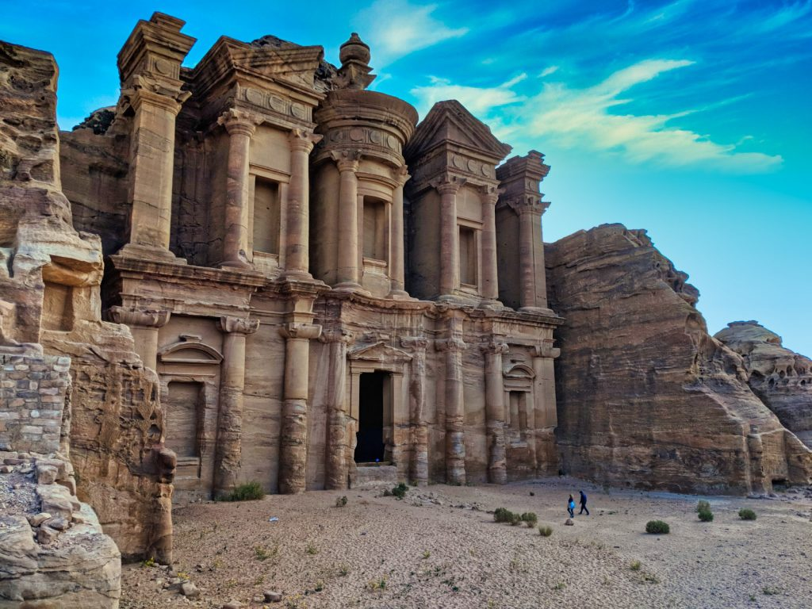
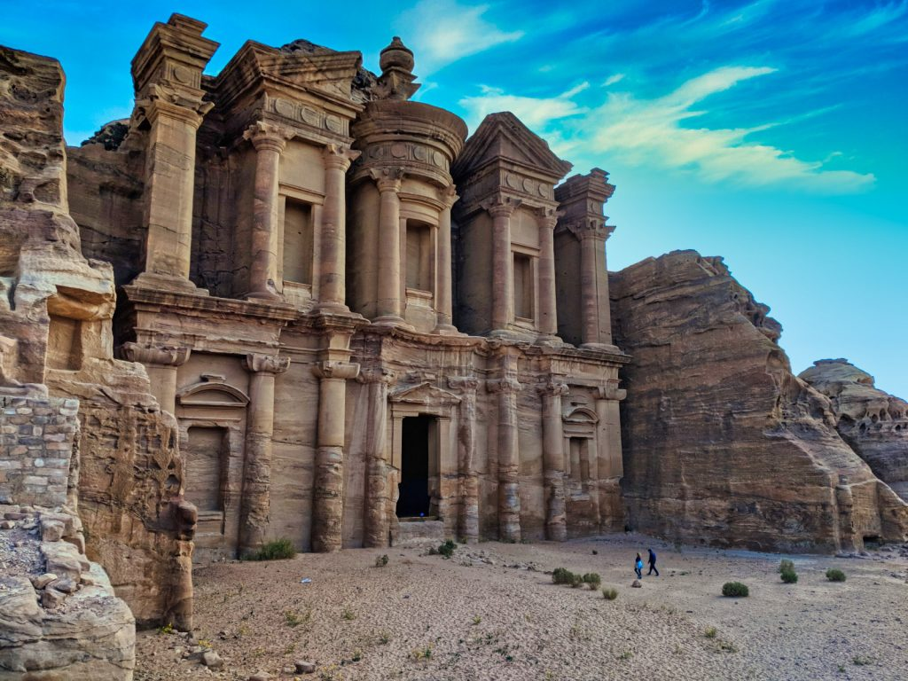

Petra Jordan
 

Name and Orthography
The Greek name Petra (“Rock”) probably replaced the biblical name Sela. Remains from the Paleolithic and Neolithic periods have been discovered at Petra, and Edomites are known to have occupied the area about 1200 BCE. Centuries later the Nabataeans, an Arab tribe, occupied it and made it the capital of their kingdom. In 312 BCE the region was attacked by Seleucid forces, who failed to seize the city. Under Nabataean rule, Petra prospered as a centre of the spice trade that involved such disparate realms as China, Egypt, Greece, and India, and the city’s population swelled to between 10,000 and 30,000.
When the Nabataeans were defeated by the Romans in 106 CE, Petra became part of the Roman province of Arabia but continued to flourish until changing trade routes caused its gradual commercial decline. After an earthquake (not the first) damaged the city in 551, significant habitation seems to have ceased. The Islamic invasion occurred in the 7th century, and a Crusader outpost is evidence of activity there in the 12th century. After the Crusades the city was unknown to the Western world until it was rediscovered by the Swiss traveler Johann Ludwig Burckhardt in 1812.
Petra, Arabic Ba?ra, ancient city, centre of an Arab kingdom in Hellenistic and Roman times, the ruins of which are in southwest Jordan. The city was built on a terrace, pierced from east to west by the Wadi Musa (the Valley of Moses)—one of the places where, according to tradition, the Israelite leader Moses struck a rock and water gushed forth. The valley is enclosed by sandstone cliffs veined with shades of red and purple varying to pale yellow, and for this reason Petra was called by the 19th-century English biblical scholar John William Burgon a “rose-red city half as old as Time.” The modern town of Wadi Musa, situated adjacent to the ancient city, chiefly serves the steady stream of tourists who continue to visit the site.
Carved directly into vibrant red, white, pink, and sandstone cliff faces, the prehistoric Jordanian city of Petra was "lost" to the Western world for hundreds of years.
Located amid rugged desert canyons and mountains in what is now the southwestern corner of the Hashemite Kingdom of Jordan, Petra was once a thriving trading center and the capital of the Nabataean empire between 400 B.C. and A.D. 106.
The city sat empty and in near ruin for centuries. Only in the early 1800s did a European traveler disguise himself in Bedouin costume and infiltrate the mysterious locale.
In 1985, the Petra Archaeological Park was declared a UNESCO World Heritage site, and in 2007 it was named one of the new seven wonders of the world.
Prologue
Petra originally known to its inhabitants in as Raqmu or Raqemo is a historic and archaeological city in southern Jordan. Petra lies around Jabal Al-Madbah in a basin surrounded by mountains which form the eastern flank of the Arabah valley that runs from the Dead Sea to the Gulf of Aqaba. The area around Petra has been inhabited from as early as 7000 BC, and the Nabataeans might have settled in what would become the capital city of their kingdom, as early as the 4th century BC. However, archaeological work has only discovered evidence of Nabataean presence dating back to the second century BC, by which time Petra had become their capital. The Nabataeans were nomadic Arabs who invested in Petra's proximity to the trade routes by establishing it as a major regional trading hub.
The trading business gained the Nabataeans considerable revenue and Petra became the focus of their wealth. The Nabataeans were accustomed to living in the barren deserts, unlike their enemies, and were able to repel attacks by taking advantage of the area's mountainous terrain. They were particularly skillful in harvesting rainwater, agriculture and stone carving. Petra flourished in the 1st century AD, when its famous Al-Khazneh structure – believed to be the mausoleum of Nabataean king Aretas IV – was constructed, and its population peaked at an estimated 20,000 inhabitants.[10]
Although the Nabataean kingdom became a client state of the Roman Empire in the first century BC, it was only in 106 AD that it lost its independence. Petra fell to the Romans, who annexed Nabataea and renamed it as Arabia Petraea.Petra's importance declined as sea trade routes emerged, and after an earthquake in 363 destroyed many structures. In the Byzantine era several Christian churches were built, but the city continued to decline, and by the early Islamic era it was abandoned except for a handful of nomads. It remained unknown to the West until it was rediscovered in 1812 by Johann Ludwig Burckhardt.
Access to the city is through a 1.2-kilometre-long (0.75 mi) gorge called the Siq, which leads directly to the Khazneh. Famous for its rock-cut architecture and water conduit system, Petra is also called the "Rose City" because of the colour of the stone from which it is carved.It has been a UNESCO World Heritage Site since 1985. UNESCO has described Petra as "one of the most precious cultural properties of man's cultural heritage". In 2007, Al-Khazneh was voted one of the New7Wonders of the World. Petra is a symbol of Jordan, as well as Jordan's most-visited tourist attraction. Tourist numbers peaked at 918,000 in 2010, but there followed a temporary slump during the political instability generated by the Arab Spring, which affected countries surrounding Jordan. Visitor numbers subsequently increased and reached a record-breaking 1.1 million tourists in 2019, marking the first time that the figure rose above the 1 million mark. Tourism in the city was crippled by the COVID-19 pandemic as visitor numbers plummeted to zero since March 2020. The Jordanian government has authorized excavations in front of the treasury to make use of the site's emptiness.
History of Petra Jordan
The Nabataeans, before they were conquered and absorbed into the Roman Empire, controlled a vast tract of the Middle East from modern-day Israel and Jordan into the northern Arabian peninsula. The remains of their innovative networks of water capture, storage, transport, and irrigation systems are found to this day throughout this area.
Scholars know the Nabataeans were in Petra since at least 312 B.C., says archaeologist Zeidoun Al-Muheisen of Jordan's Yarmouk University.
Al-Muheisen, who has been excavating in Petra since 1979 and specializes in the Nabataean period, says no one has yet found any archaeological evidence dating back to the fourth century B.C. The earliest findings thus far date back only to the second and first centuries B.C.
But more clues remain beneath the surface. "We have uncovered just 15 percent of the city," he says. "The vast majority—85 percent—is still underground and untouched."
Numerous scrolls in Greek and dating to the Byzantine period were discovered in an excavated church near the Winged Lion Temple in Petra in December 1993.
Researchers at the American Center of Oriental Research in Amman, the capital, are now analyzing the scrolls and hope they will shed light on life in Petra during this period.
Once Rome formally took possession of Petra in A.D. 106, its importance in international trade began to wane. The decay of the city continued, aided by earthquakes and the rise in importance of sea trade routes, and Petra reached its nadir near the close of the Byzantine Empire's rule, around A.D. 700.
Visitors today can see varying blends of Nabataean and Greco-Roman architectural styles in the city's tombs, many of which were looted by thieves and their treasures thus lost.
Today, local Bedouins selling tourist souvenirs hawk their wares not far from the place where Arabs believe Moses struck a rock with his staff, causing water to burst forth.
Petra is half built, half carved in stone. The awe-inspiring monuments of Petra are cut into cobblestone cliffs and mountains, that show a whole spectrum of colours at the rising and setting of the sun. At the thriving age of the Nabateans rule, Petra has a population soaring over 20,000 inhabitants.
Petra stood tall as the most successful crossroad of trail; camel caravans loaded with spices and textiles would pass through to the most distant regions of the Levant and back.
The decay of the rose city started as the Byzantine rule grew stronger, reaching its nadir as the Roman Empire folded the Nabatean page in the history books for good, around A.D. 700.
Today, local Bedouins still inhabit the magnificent city, making their own living by guiding tourists, touring and selling souvenirs at ambiguous sights, such as one in which, legend tells, Moses struck his staff to the ground exploding a water fountain.
Petra still perches the throne of magnificence throughout the pages of history. Although the “Lost City” has been found, yet, it still conceals secrets so deep mankind is yet to discover them.
Construction
Petra is an ancient city that lies in present-day Jordan and dates back to the fourth century B.C. Ruins of the once-great metropolis and trading center now serve as an important archeologic site and tourist attraction.
Until now, no study has been made of the construction techniques of the Nabataean freestanding buildings and the rockcut monuments of Petra (built from the 1stcent. BC to the 2nd cent. AD). Their technical features were documented by fieldwork, and this evidence was then analysed to determine precisely when and why these features appeared or evolved. This leads to explaining how the Nabataeans developed their architecture, and what types of construction techniques they used to bring Petra’s architecture to its peak. The historical and geographical context for the architecture of Petra is presented, with a summary of previous scholarship on the site. The focus moves to the building materials used by the Nabataeans which are found to influence the construction techniques they developed. This is followed by a detailed discussion of quarrying and the rock-cut techniques. The procedures for dressing ashlar blocks and the facades of the rock-cut monuments are analysed to determine the tools used by the builders, as well as the lifting devices necessary for construction of the freestanding buildings. The technical aspects of the construction of walls, columns, floors, the anti-seismic and stabilising techniques developed by the Nabataeans are considered. Finally, the construction of roofs is examined in detail. The results of the study reveal the sources of the building techniques used at Petra and why they were further developed there. A few features of Edomite and other local architecture are seen in Nabataean architecture. The Nabataeans also used construction techniques found elsewhere in the Greco-Roman world. However, detailed examination shows that the Nabataeans were selective in which of these techniques they used and how they refined these to suit the properties of the locally available building materials, most notably sandstone. This also led to some technical features not found elsewhere, and others which are the earliest surviving examples. Consequently, it is shown that the Nabataeans had their own construction techniques, which are as distinctive as their architectural style.
The past 25 years have seen a renaissance in the study of Petra and the Nabataeans. Numerous Jordanian and international teams have carried out extensive survey and excavation within the settlement centre, the Siq, and in outlying areas such as Jebel Haroun, Wadi Sabra, and Beidha. Important field research has also been conducted elsewhere in the region formerly occupied by the Nabataean kingdom, which spread across portions of present-day Israel, Palestine, Saudia Arabia, Jordan, and Syria. Much of this work is reflected and cited in the excellent survey Petra Rediscovered, issued in connection with the exhibition “Petra: Lost City of Stone” that toured North America in 2004-5.1 Such new information constantly updates and refines our understanding of the history, religion, languages, and material culture of the Nabataeans, making references to “lost” cities and “mysterious” desert dwellers seem quaint and old-fashioned. Our understanding of Nabataean architecture naturally has also benefited from the intensified field research, and numerous recent publications deal with the sacred, domestic, and hydraulic structures constructed by the Nabataeans, along with the striking tomb architecture carved into the brightly coloured sandstones of Arabia Petraea.
Location
Petra is located about 150 miles south of both Jerusalem and Amman, the capital of Jordan, and about midway between Damascus, Syria, and the Red Sea, making it ideally suited as a hub of commerce in the area.
The site is considered significant by historians and archeologists alike because of its beautiful rock-cut architecture and innovative water management system, the latter of which made the region inhabitable, given that it is surrounded by desert and rugged, mountainous terrain.
Petra has also been referred to as the “Rose City” because of the color of the stones used in its buildings. It was named a UNESCO World Heritage Site in 1985.
In ancient times, Petra might have been approached from the south on a track leading across the plain of Petra, around Jabal Haroun ("Aaron's Mountain"), the location of the Tomb of Aaron, said to be the burial place of Aaron, brother of Moses. Another approach was possibly from the high plateau to the north. Today, most modern visitors approach the site from the east. The impressive eastern entrance leads steeply down through a dark, narrow gorge, in places only 3–4 m (10–13 ft) wide, called the Siq ("shaft"), a natural geological feature formed from a deep split in the sandstone rocks and serving as a waterway flowing into Wadi Musa.
At the end of the narrow gorge, the Siq, stands Petra's most elaborate ruin, popularly known as Al-Khazneh ("the Treasury"), hewn into the sandstone cliff. While remaining in remarkably preserved condition, the face of the structure is marked by hundreds of bullet holes made by the local Bedouin tribes that hoped to dislodge riches that were once rumoured to be hidden within it. A little farther from the Treasury, at the foot of the mountain called en-Nejr, is a massive theatre, positioned so as to bring the greatest number of tombs within view. At the point where the valley opens out into the plain, the site of the city is revealed with striking effect. The theatre was cut into the hillside and into several of the tombs during its construction. Rectangular gaps in the seating are still visible. Almost enclosing it on three sides are rose-coloured mountain walls, divided into groups by deep fissures and lined with knobs cut from the rock in the form of towers.
The Petra Pool and Garden Complex is a series of structures within the city center. Originally said to be a market area, excavations at the site have allowed scholars to identify it as an elaborate Nabataean garden, which included a large swimming pool, an island-pavilion, and an intricate hydraulic system.
Facts and fiction
Several scenes from the Hollywood blockbuster Indiana Jones and the Last Crusade were filmed in Petra. The movie's fictional Canyon of the Crescent Moon was modeled on the eastern entrance to Petra, a 250-foot-high (76-meter-high) sandstone slot canyon known as the Siq that leads directly to Al Khazneh (the Treasury)—perhaps the most stunning of Petra's dozens of breathtaking features.
In the film's climactic final scenes, actors Harrison Ford and Sean Connery burst forth from the Siq and walk deep into the labyrinths of the Treasury in their quest to find the Holy Grail. But, as usual, archaeological fact bowed to Hollywood fiction when Indy came to Petra.
In reality, the Treasury is nothing more than a facade with a relatively small hall once used as a royal tomb.
"You can't really say that anything in Indiana Jones is accurate," Haifa University archaeologist Ronny Reich said. "I was once asked in the United States if one of the responsibilities of Israeli archaeologists is to chase down Nazis. I told them, 'Not any more."
A giant urn carved above the entrance to the Treasury bears the marks of hundreds of gunshots. Bedouin tribesmen living in and among the ancient ruins say the damage was caused when local men would open fire with rifles, seeking the loot thought to be inside the urn (actually made of solid stone).
There are dozens of tombs and other carved or constructed structures and sites within Petra.
Jordan is home to the ancient city of Petra. Known as “The Rose City” it is famous for its unique architecture carved directly into the rock face. It is also a UNESCO World Heritage Site and one of the New 7 Wonders of the World.
Jordanian culture has a particular practice that if someone invites you to their home for coffee, tea, or a meal, it is considered courteous if you decline the invitation multiple times before accepting. It’s actually an Arabic tradition to share food or drinks, as it’s a sign of generosity of the host. Even if you don’t want to drink or eat something, they will insist several times until you finally accept that, so your host would be happy taking this honour of being a generous host.
Much like India’s “Nazar lag jayegi”, Jordanian people are likely to believe that over-praising kids can actually bring bad luck and this act is generally avoided.
The Treasury at Petra was used in the final sequence of the film, “Indiana Jones and the Last Crusade”. Also, it’s appeared as main scene in one of science fiction films of “Transformers”, as Petra was one of ancient places on Earth where they had to hide the key of ultimate power to control Autobots and Decepticons.
More about Petra Jordan
The Nabataeans worshipped Arab gods and goddesses during the pre-Islamic era as well as a few of their deified kings. One, Obodas I, was deified after his death. Dushara was the primary male god accompanied by his three female deities Allat and Manat. Many statues carved in the rock depict these gods and goddesses. New evidence indicates that broader Edomite, and Nabataean theology had strong links to Earth-Sun relationships, often manifested in the orientation of prominent Petra structures to equinox and solstice sunrises and sunsets.
A stele dedicated to Qos-Allah 'Qos is Allah' or 'Qos the god', by Qosmilk (melech – king) is found at Petra (Glueck 516). Qos is identifiable with Kaush (Qaush) the God of the older Edomites. The stele is horned and the seal from the Edomite Tawilan near Petra identified with Kaush displays a star and crescent (Browning 28), both consistent with a moon deity. It is conceivable that the latter could have resulted from trade with Harran (Bartlett 194). There is continuing debate about the nature of Qos (qaus – bow) who has been identified both with a hunting bow (hunting god) and a rainbow (weather god) although the crescent above the stele is also a bow.
Nabataean inscriptions in Sinai and other places display widespread references to names including Allah, El and Allat (god and goddess), with regional references to al-Uzza, Baal and Manutu (Manat) (Negev 11). Allat is also found in Sinai in South Arabian language. Allah occurs particularly as Garm-'allahi – god decided (Greek Garamelos) and Aush-allahi – "gods covenant" (Greek Ausallos). We find both Shalm-lahi "Allah is peace" and Shalm-allat, "the peace of the goddess". We also find Amat-allahi "she-servant of god" and Halaf-llahi "the successor of Allah".
Recently, Petra has been put forward as the original "Mecca" by some in the revisionist school of Islamic studies, owing to claims of large numbers of independent pieces of evidence, namely that the early original mosques faced Petra, not Jerusalem or Mecca, as the direction of Muslim prayer, the Qibla. However, others have challenged the notion of comparing modern readings of Qiblah directions to early mosques’ Qiblahs as they claim early Muslims could not accurately calculate the direction of the Qiblah to Mecca and so the apparent pinpointing of Petra.
In 1845, British poet John William Burgon won Oxford University's Newdigate Prize for his poem "Petra", containing the famous description "...a rose-red city half as old as time".
Petra appeared in the novels Left Behind Series; Appointment with Death; The Eagle in the Sand; The Red Sea Sharks, the nineteenth book in The Adventures of Tintin series; and in Kingsbury's The Moon Goddess and the Son. It played a prominent role in the Marcus Didius Falco mystery novel Last Act in Palmyra, and is the setting for Agatha Christie's Appointment With Death. In Blue Balliett's novel, Chasing Vermeer, the character Petra Andalee is named after the site.[80]
In 1979 Marguerite van Geldermalsen from New Zealand married Mohammed Abdullah, a Bedouin in Petra. They lived in a cave in Petra until the death of her husband. She authored the book Married to a Bedouin. Van Geldermalsen is the only western woman who has ever lived in a Petra cave.
An Englishwoman, Joan Ward, wrote Living With Arabs: Nine Years with the Petra Bedouin[82] documenting her experiences while living in Umm Sayhoun with the Petra Bedouin, covering the period 2004–2013.
Petra declined rapidly under Roman rule, in large part from the revision of sea-based trade routes. In 363, an earthquake destroyed many buildings and crippled the vital water management system.[38] The old city of Petra was the capital of the Byzantine province of Palaestina III and many churches from the Byzantine period were excavated in and around Petra. In one of them, the Byzantine Church, 140 papyri were discovered, which contained mainly contracts dated from 530s to 590s, establishing that the city was still flourishing in the 6th century.
The Byzantine Church is a prime example of monumental architecture in Byzantine Petra.
The last reference to Byzantine Petra comes from the Spiritual Meadow of John Moschus, written in the first decades of the 7th century. He gives an anecdote about its bishop, Athenogenes. It ceased to be a metropolitan bishopric sometime before 687, when that function had been transferred to Areopolis. Petra is not mentioned in the narratives of the Muslim conquest of the Levant, nor does it appear in any early Islamic records.